Madad — brand assets
Generated from the master mark by node brand/generate.mjs. Text is outlined: no file needs a font.
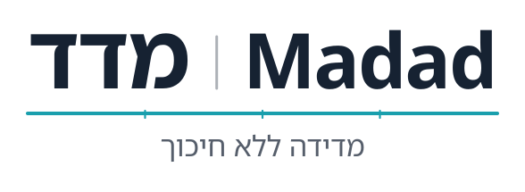
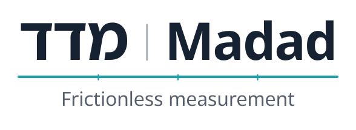
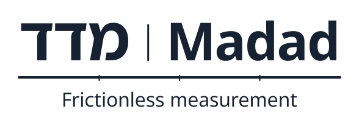
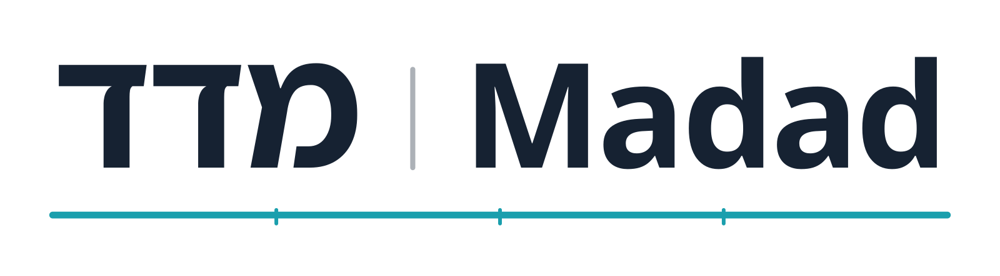
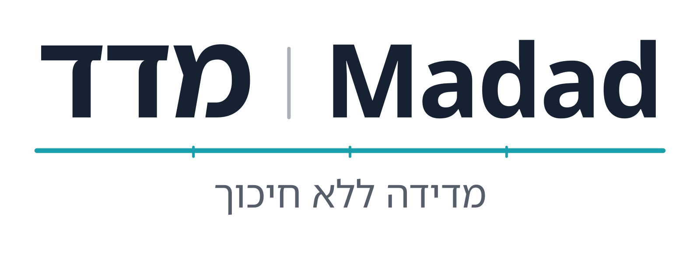
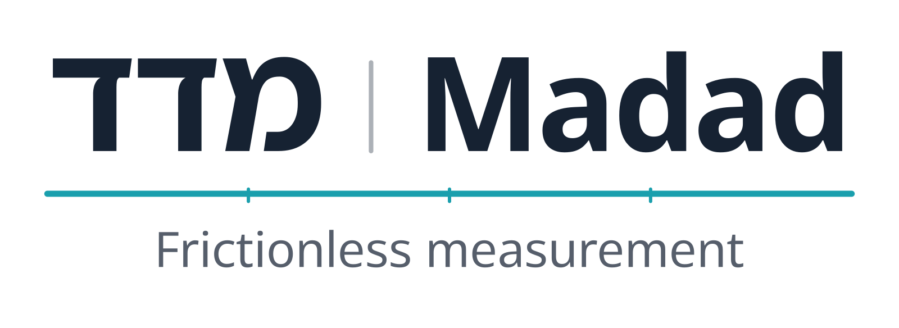
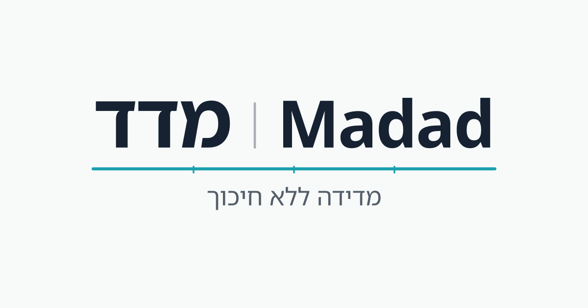
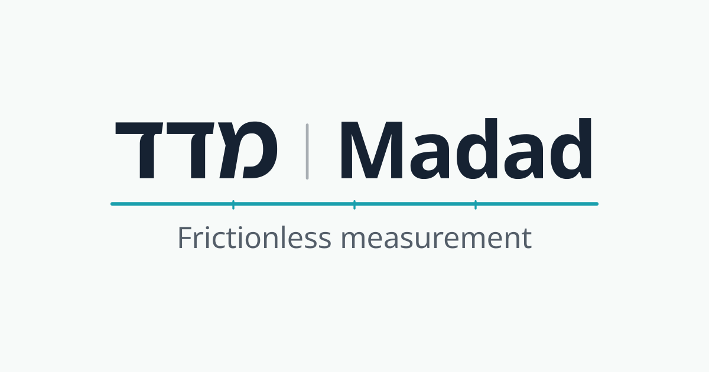
Files
madad.svg— The mark, on light backgrounds.madad-tagline-he.svg— With the Hebrew tagline, on light backgrounds.madad-tagline-en.svg— With the English tagline, on light backgrounds.madad-dark.svg— The mark, on dark backgrounds (white names, accent rule).madad-tagline-he-dark.svg— With the Hebrew tagline, on dark backgrounds (white names, accent rule).madad-tagline-en-dark.svg— With the English tagline, on dark backgrounds (white names, accent rule).madad-mono-ink.svg— The mark, one colour, ink — print, stamps, fax.madad-tagline-he-mono-ink.svg— With the Hebrew tagline, one colour, ink — print, stamps, fax.madad-tagline-en-mono-ink.svg— With the English tagline, one colour, ink — print, stamps, fax.madad-mono-white.svg— The mark, one colour, white — on photos and coloured grounds.madad-tagline-he-mono-white.svg— With the Hebrew tagline, one colour, white — on photos and coloured grounds.madad-tagline-en-mono-white.svg— With the English tagline, one colour, white — on photos and coloured grounds.madad-wordmark-he.svg— Hebrew name alone, on light backgrounds — a single-language header.madad-wordmark-he-dark.svg— Hebrew name alone, on dark backgrounds (white names, accent rule) — a single-language header.madad-wordmark-en.svg— English name alone, on light backgrounds — a single-language header.madad-wordmark-en-dark.svg— English name alone, on dark backgrounds (white names, accent rule) — a single-language header.madad@2x.png— The mark, 1600 px wide, transparent.madad-dark@2x.png— The dark mark, 1600 px wide, transparent.madad-tagline-he@2x.png— With the Hebrew tagline, 1600 px wide.madad-tagline-en@2x.png— With the English tagline, 1600 px wide.icon.svg— The icon: favicon (SVG) and the source of the rasters below.icon-maskable.svg— For Android adaptive icons and iOS: full-bleed tile, content in the safe zone.icon-mono.svg— The icon in one colour (ink, no tile).favicon-16.png— Favicon, 16 px.favicon-32.png— Favicon, 32 px.favicon-48.png— Favicon, 48 px.apple-touch-icon.png— iOS home screen, 180 px (iOS rounds the corners itself).icon-192.png— Web app manifest, 192 px.icon-512.png— Web app manifest, 512 px.icon-maskable-512.png— Web app manifest, maskable, 512 px.favicon.ico— Favicon for old browsers: 16, 32 and 48 px in one file.og-he.svg— Share image source (Hebrew tagline).og-he.png— Share image, 1200×630, Hebrew tagline.og-en.svg— Share image source (English tagline).og-en.png— Share image, 1200×630, English tagline.